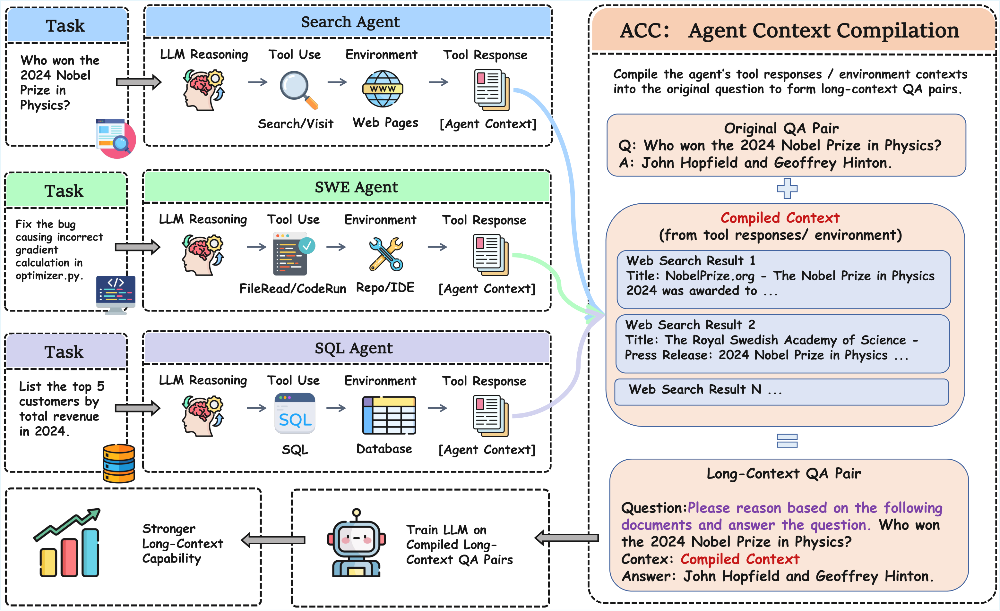
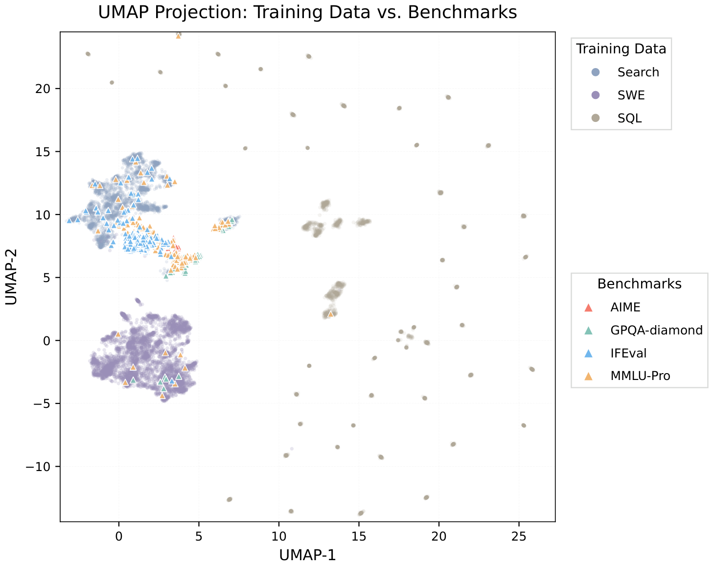
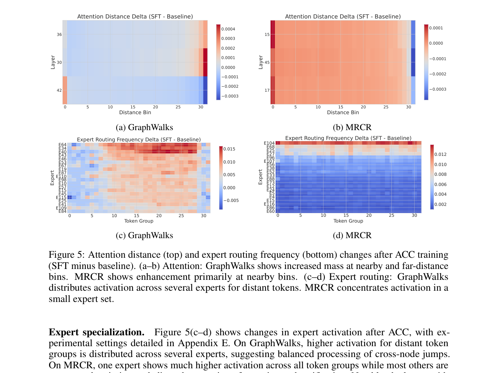

ACC：把 agent 轨迹「编译」成 long-context 训练数据
ACC: Compiling Agent Trajectories for Long-Context Training
①开源贡献 Open-source Artifacts
本文在 Hugging Face 上同时开源了训练数据集与训练后的 checkpoint，二者均为 Apache 2.0，截至解读日（2026-06-01）页面可访问、可下载。论文首页与 abstract 中未给出 GitHub 代码仓库链接，arXiv abs 页也未见，因此训练/数据构造的脚本目前视为未公开。
| 类型 | 是否开源 | 内容 / 链接 |
|---|---|---|
| 代码 Code | ✘ | 论文首页/脚注/abstract 与 arXiv abs 页均未见 GitHub 仓库链接；数据构造与训练脚本截至解读日未公开。 |
| 模型权重 Weights | ✔ | groundhogLLM/ACC-Qwen3-30B-A3B · 基座 Qwen3-30B-A3B-Thinking（MoE，约 31B 总参 / 3B active）· BF16 · Apache 2.0 |
| 数据集 Dataset | ✔ | groundhogLLM/ACC-dataset · 共 10,802 条编译后的 long-context QA（search 3,369 / SWE 4,368 / SQL 3,065）· 两轮 user–assistant 对话格式 · 约 2.69 GB · Apache 2.0 |
| 环境 / Benchmark | ✘ | 评测沿用既有公开 benchmark（MRCR、GraphWalks 等），本文未自带新的 benchmark/harness 发布。 |
| 项目主页 / Demo | ✘ | 未见独立项目主页或 demo。 |
②研究动机与贡献 Motivation & Contribution
背景与问题
agent 的兴起重新点燃了对 LLM long-context reasoning 能力的需求：agent 要跨很多 turn 调用工具，输入会越来越长，模型必须能在很长的 context 里把分散的信息整合起来。但传统上要训练这种能力，靠的是两条都很贵的路：（1）curate 长文档——需要精确标注证据位置、做大量质量过滤；（2）启发式合成长 context——把短文档拼接/插入干扰，但这种拼法缺少真实解题时才会产生的复杂依赖关系。两者都难以规模化，也难以贴近真实的「跨段整合」需求。
作者抓住的关键观察是：agent 解题本身就在源源不断地产出含有真实长程依赖的 trajectory。一条 trajectory 里，回答原始 question 所需的证据天然散落在不同 turn 的 tool response 里，需要把相距很远的 context 片段整合起来——这正是 long-context reasoning 想要的监督信号。可惜标准 agent SFT 把 tool response 全部 mask 掉，只监督每个 turn 的 reasoning + action（即 turn-level 的 tool selection）。于是这些散落的证据信号根本没进入 loss，作者称之为 supervision blind spot（监督盲区）。
本文的切入点
既然证据已经在 trajectory 里、答案也已被验证为正确，那就不必再额外标注，只要换一种「打包」方式即可。ACC 把一条 trajectory 编译（compile）成一个 long-context QA 对：把原 question 与各 turn 收集到的 tool response/observation 拼成一整段 context $C$，训练模型不再调用工具，直接从 $(q, C)$ 推理出最终答案。这样一来，最终答案的监督信号会直接触达每一个证据 token，而不再被中间一连串 turn-level 的 tool selection「过滤」掉，从而把 question 与散落证据之间的依赖显式暴露给模型学习。
核心贡献
- 提出 Agent Context Compilation (ACC)：一个把多轮 agent trajectory 转成 long-context 训练 QA 的方法，无需额外人工标注，答案直接取自 trajectory 最终输出；可与任意现有 long-context 扩展/训练方法叠加，提供可规模化的 SFT 数据。
- 用 ACC 训练的 Qwen3-30B-A3B 在 long-range dependency 建模 benchmark 上逼近大约 8 倍 active 参数的 Qwen3-235B-A22B：MRCR 68.3、GraphWalks 77.5，同时通用能力（GPQA、MMLU-Pro、AIME、IFEval）基本不退化。
- 通过 mechanism analysis 观察到 ACC 训练后出现 task-adaptive attention restructuring（按任务重新分配注意力距离）与 expert specialization（MoE 专家按任务分工），说明学到的长程能力是灵活、任务自适应的，而非固定模式。
③方法 Method
ACC 的 pipeline 高层上分三步：（1）从 search / SWE / SQL 三类 agent 收集答案已验证的 trajectory；（2）把每条 trajectory 的 tool response / 环境观测抽成结构化证据片段，shuffle 后拼成一段长 context；（3）用一个强 teacher 生成 reasoning trace（只保留能推出正确答案的），得到 $(q, C, r, y)$ 形式的训练样本，再做标准 SFT。下图是论文 Figure 1 的总览。

3.1 问题刻画：agent SFT 的监督盲区
一条 agent trajectory 写成 $k-1$ 个交互 turn 加一个最终作答 turn：
$$\tau = \big(q,\ (r_1,a_1,o_1),\ \dots,\ (r_{k-1},a_{k-1},o_{k-1}),\ (r_k,y)\big),$$其中 $q$ 是原始 question；$r_t$ 是该 turn 的 reasoning；$a_t$ 是 action（即一次 tool call）；$o_t$ 是 tool response / 环境 observation；$(r_k,y)$ 是最终的 reasoning–answer 对。turn $t$ 之前的历史记作 $H_{
关键论证：考虑某个 $t
3.2 ACC 的训练目标
ACC 把所有证据收进一段长 context $C$，训练模型直接从 $q$ 与 $C$ 写出 reasoning trace $r$ 和最终答案 $y$：
$$\mathcal{L}_{\text{ACC}} = -\sum_{j\in r\cup y}\log P(\text{token}_j \mid q,\ C,\ \text{token}_{3.3 Context 构造：抽证据、加干扰、再 shuffle
对每条 trajectory 抽取结构化证据片段 $\mathrm{Evi}(\tau)=[e_1,\dots,e_m]$，要求「单凭聚合后的 context 就能在不调工具的前提下回答 $q$」。三类 agent 的抽法不同：
- Search：抽出被访问页面的全文，并把未访问的候选结果作为 distractor 一并放入。
- SWE：抽出正确 patch 所涉及的文件，并把 debug 过程中查看过的额外 context 文件作为 distractor 放入。
- SQL：抽出 trajectory 中查询过的全部表的完整内容。
为了加难度，对 $\{1,\dots,m\}$ 施加一个随机置换 $\pi$，再把片段拼接成编译 context：
$$C_i = \mathrm{Concat}\big(e_{\pi(1)}, e_{\pi(2)}, \dots, e_{\pi(m)}\big),\qquad |C_i|\le B,$$其中 $B$ 是 token 预算。因为证据片段本身是 self-contained 的，shuffle 之后模型不能再靠「顺序/位置」找答案，只能靠语义关联去定位相关信息——这正是想训练的能力。
reasoning trace 怎么来：答案已验证的 trajectory 有正确答案但没有显式 reasoning。作者用 DeepSeek-V3.2-Thinking 生成候选 rationale，只保留能推出正确答案 $y_i$ 的那些（reject sampling）。不同 agent 类型的 pass rate 差异很大：Search 接近 100%，SQL 约 50%，SWE 约 10%。最终训练样本是三元组 $(x_i,y_i,r_i)$。
- 数据规模：共 10,802 条编译样本（Search 3,369 / SWE 4,368 / SQL 3,065）；token 长度跨度大，从约 2K 到 128K，分布因 agent 类型而异。
- 训练超参（Table 1）：sequence length 131,072 tokens；global batch size 16；learning rate $1\times10^{-5}$（最低 $1\times10^{-6}$）；cosine schedule + 5% warmup；AdamW（$\beta_1{=}0.9,\beta_2{=}0.999$，weight decay 0.1）；cross-entropy（chunk size 1024）；sequence parallelism 8、expert parallelism 1；训练 4 个 epoch。
- 不需要额外人工标注：答案直接取自 trajectory 最终输出；distractor 来自「候选但未访问 / 未打开」的真实素材，而非凭空插入无关文档。
- 正交性：ACC 只是「换一种打包监督信号的数据」，可叠加到任意 long-context 扩展（改 position embedding / attention）或 post-training 方案之上。
④实验评估 Evaluation
评测设置
- 主 benchmark（考察长程依赖建模）：
- MRCR（Multi-Round Coreference Resolution，OpenAI 发布）——跨 turn 的指代消解；报告 overall 与 2-needle / 4-needle 子任务（沿用 QwenLong-L1.5 的评测设定）。
- GraphWalks（OpenAI 发布）——在超长 context 上做图遍历；报告 overall 与 Parents / BFS 子任务的 precision（沿用 LongCat-Flash-Omni 的设定）。
- 通用能力（查负迁移）：GPQA-Diamond、MMLU-Pro、AIME’24/’25、IFEval。
- 对比基线：基座 Qwen3-30B-A3B-Thinking；强基线 Qwen3-235B-A22B-Thinking、GPT-OSS-120B、DeepSeek-V3.2-Thinking、GPT-5.1-Thinking、GLM-4.6-Thinking、Kimi-K2-Thinking；以及 long-context post-training 方法 QwenLong-L1.5、LongPO、LongRLVR。
- 指标方向：MRCR / GraphWalks 分数越高越好；均报告 avg@3（默认推理配置，不手动调 reasoning effort）。
主要结果（原文 Table 2，越高越好；本文方法加粗）
| 方法 | MRCR Overall | GraphWalks Overall |
|---|---|---|
| Qwen3-30B-A3B-Thinking（基座） | 50.19 | 69.92 |
| + ACC（本文） | 68.28 (+18.09) | 77.51 (+7.59) |
| Qwen3-235B-A22B-Thinking | 67.51 | 76.63 |
| GPT-OSS-120B | 38.00 | 69.34 |
| DeepSeek-V3.2-Thinking | 71.01 | 85.39 |
| GPT-5.1-Thinking | 60.91 | 57.14 |
| GLM-4.6-Thinking | 64.53 | 78.95 |
| Kimi-K2-Thinking | 58.05 | 80.04 |
诚实解读：在 MRCR 上 ACC 把基座从 50.2 拉到 68.3（+18.1），2-needle / 4-needle 子项分别 +15.06 / +21.16——可见越难（needle 越多）提升越大；GraphWalks 从 69.9 升到 77.5（+7.6）。两项都超过了 active 参数大约 8 倍的 Qwen3-235B-A22B（67.51 / 76.63），这是本文最亮眼的卖点。不过也要看清上限：DeepSeek-V3.2-Thinking（71.0 / 85.4）等更强的闭/开源大模型仍领先，ACC 没有把 30B 推到 SOTA，而是把它推到「同梯队大模型」的水平。
通用能力不退化（原文 Table 3）
long-context 训练常被担心引发负迁移。结果是 GPQA-Diamond +2.49、MMLU-Pro +1.50、AIME’25 +3.33，AIME’24 持平、IFEval 仅 −0.55——没有明显退化甚至略有提升。为排除测试集泄漏，作者把训练 query 与 benchmark 题目都只保留「问题文本」做 embedding 比对（all-MiniLM-L6-v2 + UMAP）：平均最近邻 cosine 相似度 < 0.36，线性分类器区分二者的 AUC 高达 0.9986，说明只是 domain-level 的话题重叠（Search 子集与知识类 benchmark 因都来自 Wikipedia 而话题相近），而非实例级重复。

与 long-context post-training 方法比较（原文 Table 5）
QwenLong-L1.5-30B 在 MRCR 上以多阶段 pipeline（文档清洗 + 知识图谱 + RL）领先（92.30），但 ACC 仅用标准 SFT 就在 GraphWalks 上反超它（77.51 vs 73.85）。基于 Qwen2.5 的 LongPO / LongRLVR 在这两个新 benchmark 上得分都很低（多在 10–30 区间），仅作参考。LoongRL 未放出 checkpoint 故未比。
消融：哪个设计真起作用（原文 Table 6）
- 验证盲区假说：把原始 search trajectory 用标准 Agent SFT（mask 掉 observation）训练，MRCR −8.03、GraphWalks −12.05，反而比基座更差——直接印证 3.1 的监督盲区。
- 单 agent 类型：单独训 Search / SWE / SQL，在 MRCR 上都涨（+8.14 / +4.63 / +6.25），说明「把散落证据编进一段 context」本身就有助于跨 turn 指代消解；但在 GraphWalks 上只有 SQL 涨（+5.58），Search / SWE 都掉。作者解释：SQL 表天然是关系型、契合图遍历，而网页/源码是长连续段落，难以学到离散的 node-level 推理。
- distractor：从 Search / SWE 去掉 distractor，MRCR 分别降 3.34 / 3.81——干扰项帮助模型学会「在噪声中定位关键证据」。但 GraphWalks 上单 agent 设定却相反（去掉 distractor 反而 +13.71 / +2.22），因为 Search/SWE 的 distractor 与 query 语义无关，对图遍历帮不上忙。
- 全混合最优：三类混合（即完整 ACC）在两个 benchmark 上都超过任何单一变体（MRCR 68.28 / GraphWalks 77.51），说明不同 trajectory 类型互补：SQL 的关系型数据保住了 graph-walking 能力，Search/SWE 的 distractor 提供了定位与去噪训练。
机制分析（原文 Figure 5）

作者对 baseline 与 ACC checkpoint 做 attention 距离分箱（32 个 bin）与 MoE router top-k 频率统计：GraphWalks 训练后在「近邻」与「远跳」两端都增加注意力质量（对应图遍历既要查邻居又要跳远节点），并把远程 token 的处理分散到若干 expert；MRCR 则主要增强近距注意力（对应扫描时逐段核对候选）、并把激活高度集中到一个 expert。两个任务上「变化最大的三层」index 完全不同——这说明 ACC 训练后模型是按任务灵活重排注意力与专家分工，而非固定模式。
⑤洞见 Insights
- masking 是一种被忽视的「监督浪费」。标准 agent SFT 为了只学 tool selection 而 mask 掉 tool response，等于把一座免费的长程监督金矿丢掉。ACC 的核心不是造数据，而是改变同一批 trajectory 的监督打包方式——把目标从「下一步选哪个工具」换成「直接从全部证据答题」，让答案梯度无障碍地触达每个证据 token。
- 真实解题轨迹自带「长程依赖」，比启发式拼接更可信。合成 long-context 的老办法是拼短文档/插无关段，缺少真实依赖；而 agent 解题时证据天然散落、彼此关联，再加 shuffle + 真实 distractor，逼模型靠语义而非位置定位——这是更贴近真实需求的监督。
- 多类 agent 互补，不是越多越好而是越「异构」越好。SQL（关系型）独力扛起 graph traversal，Search/SWE（长段落）负责指代消解与去噪，三者混合才同时拿下 MRCR 与 GraphWalks——提示「数据多样性的结构」比单纯数据量更关键。
局限与未来
作者自陈：只在三类 agent、一个模型（Qwen3-30B-A3B）上验证，更广的泛化与百万 token 级的 scaling 尚待研究；reasoning trace 依赖强 teacher（DeepSeek-V3.2-Thinking）生成，有 bias 传播风险；从我的角度看，SWE 的 reject sampling pass rate 仅约 10%，意味着这条数据获取链对「答案已验证的高质量 trajectory」高度依赖，难度大的领域产量很低。社会影响层面，原始 trajectory 可能泄漏隐私、编译 context 可能含受版权/专有材料，需谨慎过滤与对齐。未来方向是扩展到更多 agent 类型、并 scale 到更长 context。
与相关工作的关系
按本文自己的归类，提升 long-context 能力大致有四条路线：（1）改架构（position embedding / sparse·linear attention，如 MrRoPe、ROPE++、Native Sparse Attention、Mamba-3）；（2）构造高质量长文档做预训练数据（Longwanjuan、LiteLong、Quest）；（3）post-training 用合成数据 + RL（longRLVR、LongPO、LoongRL）；（4）推理期用 agent 框架管理长上下文记忆（QwenLong-L1.5、MemAgent）。ACC 与它们的根本区别在于：既不改架构、也不合成预训练文档、也不依赖复杂的 post-training RL，而是把真实 agent trajectory 当作 long-context reasoning 训练的直接数据源，且只用标准 SFT，因此能与上述任意路线叠加。